CES 2027 · 6 gece Las Vegas + Los Angeles
fuartour.com · 0850 255 58 58

6 GECE · 5 – 12 OCAK 2027
CES 2027 Las Vegas + Los Angeles Turu
4 gece Las Vegas (4* The STRAT) + 2 gece Los Angeles (4* DoubleTree by Hilton Downtown) · THY ile Los Angeles'a direkt uçuş · panoramik şehir turu ve alışveriş turu

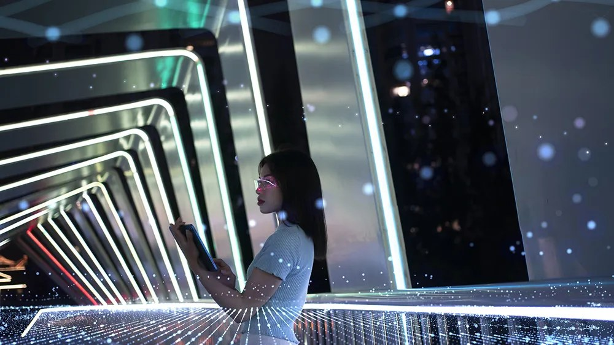

Fuar Bilgileri
FuarCES 2027 – Tüketici Elektroniği ve Teknoloji Fuarı (60. yıl)
Ürün gruplarıYapay zekâ ve çipler, robotik, mobilite, dijital sağlık ve giyilebilir cihazlar, akıllı ev, enerji, XR, girişimler (Eureka Park)
Fuar tarihi6–9 Ocak 2027
Ziyaretçi profiliYalnızca ticari ziyaretçiler
YerLas Vegas Convention Center ve çevre mekânlar, Las Vegas
OrganizatörConsumer Technology Association (CTA)
Geçmiş Fuar İstatistikleri · CES 2026
4.100+katılımcı firma
148.392ziyaretçi
55.841ABD dışından ziyaretçi
141ülke, bölge ve toprak
Gün Gün Program
1. GÜN5 Ocak Salı
İstanbul – Los Angeles – Las Vegas. 10:50 İstanbul Havalimanı dış hatlar gidiş katında buluşma, check-in ve pasaport işlemleri. 13:50 THY TK9 ile Los Angeles'a direkt uçuş, yerel saatle 16:35 varış. Karşılama ve kara yoluyla Las Vegas'a transfer (yaklaşık 4,5 saat), otele yerleşme.
2. GÜN6 Ocak Çarşamba
CES 1. gün. Otelde kahvaltı. Las Vegas Convention Center'da fuar ziyareti, yaka kartlarının alınması ve firma görüşmeleri.
3.–4. GÜN7–8 Ocak Perşembe–Cuma
CES 2. ve 3. gün. Otelde kahvaltı. Tam gün fuar ziyareti: The Venetian'daki sergi alanları ve girişimlere ayrılan Eureka Park. Akşamlar serbest.
5. GÜN9 Ocak Cumartesi
CES son gün / Las Vegas – Los Angeles. Otelde kahvaltı ve son fuar ziyaretleri. Öğleden sonra kara yoluyla Los Angeles'a geçiş (yaklaşık 4,5 saat), otele yerleşme.
6. GÜN10 Ocak Pazar
Los Angeles panoramik tur. Otelde kahvaltı. Hollywood Bulvarı ve Şöhretler Kaldırımı, Hollywood yazısı manzarası, Beverly Hills ve Rodeo Drive, Santa Monica sahili.
7. GÜN11 Ocak Pazartesi
Alışveriş turu / Los Angeles – İstanbul. Otelde kahvaltı, odaların boşaltılması ve outlet alışveriş turu. Öğleden sonra havalimanına transfer, 18:30 THY TK10 ile İstanbul'a direkt uçuş.
8. GÜN12 Ocak Salı
İstanbul. 18:55 İstanbul Havalimanı'na varış ve turumuzun sonu.
Fuartour · Fuar ve iş seyahati organizasyonufuartour.com · 0850 255 58 581 / 6
CES 2027 · 6 gece Las Vegas + Los Angeles
fuartour.com · 0850 255 58 58
KONAKLAMA · 4 GECE LAS VEGAS + 2 GECE LOS ANGELES · KAHVALTI DAHİL
Konaklama
4* The STRAT Hotel, Casino & Tower
Las Vegas · 5–9 Ocak · 4 gece · kahvaltı dahil · 2000 Las Vegas Blvd S · Las Vegas Strip (kuzey ucu)
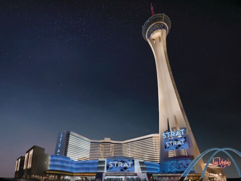
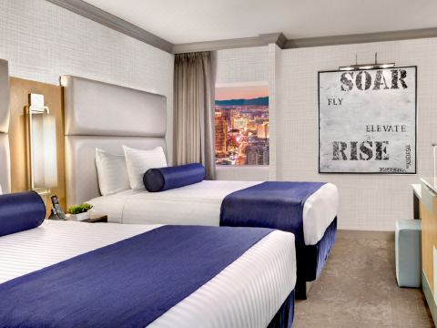
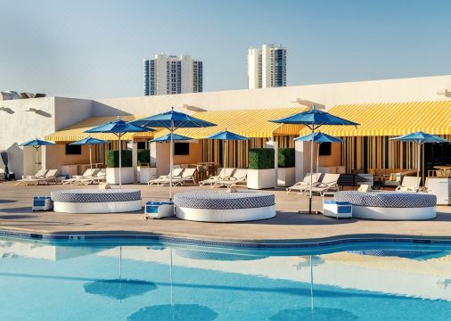
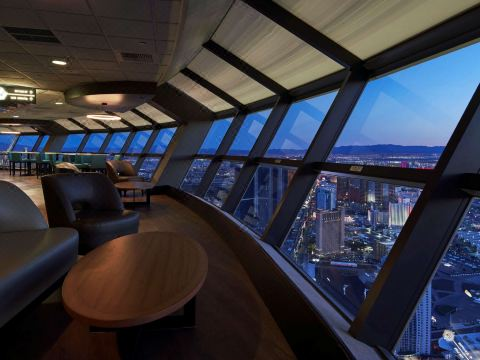
Las Vegas Strip'in kuzey ucundaki otel, şehrin simgelerinden olan gözlem kulesiyle tanınır; kulenin tepesinde seyir terası ve döner restoran bulunur. Tesiste açık havuz, kumarhane, restoranlar ve barlar vardır. Odalar yenilenmiş, sade ve ferah bir düzendedir.
Mesafeler · kuş uçuşu, yaklaşık
Las Vegas Convention Center (CES ana alanı)≈ 1,8 km
The Venetian Expo (CES sergi alanı, Eureka Park)≈ 2,9 km
Fremont Street≈ 2,8 km
Los Angeles Havalimanı (kara yolu)≈ 430 km · 4,5 saat
4* DoubleTree by Hilton Los Angeles Downtown
Los Angeles · 9–11 Ocak · 2 gece · kahvaltı dahil · 120 S Los Angeles St · Downtown, Little Tokyo
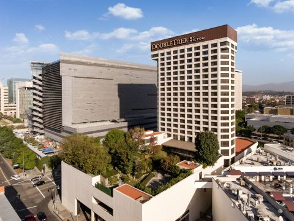
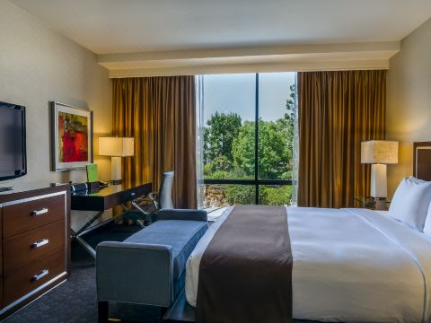
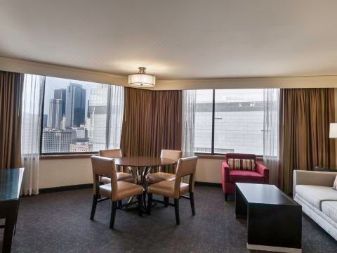
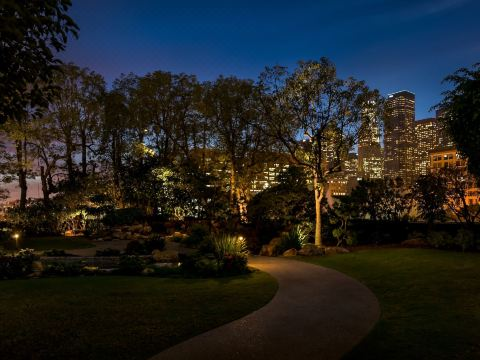
Şehir merkezinde, Little Tokyo semtindeki otel, çatı katındaki Japon bahçesiyle bilinir. Odalar geniş pencereli ve çalışma masalıdır; tesiste restoran, bar ve fitness merkezi bulunur. Açık büfe kahvaltı otelin kafesinde verilir.
Mesafeler · kuş uçuşu, yaklaşık
Hollywood Bulvarı / Şöhretler Kaldırımı≈ 9,6 km
Rodeo Drive, Beverly Hills≈ 14,6 km
Santa Monica İskelesi≈ 23,7 km
Los Angeles Havalimanı (LAX)≈ 19,4 km
Fuartour · Fuar ve iş seyahati organizasyonufuartour.com · 0850 255 58 582 / 6
CES 2027 · 6 gece Las Vegas + Los Angeles
fuartour.com · 0850 255 58 58
UÇUŞ VE ÜCRET
Uçuş ve Tur Ücreti
Uçuş ve Tur Ücreti · 6 gece, kişi başı
Gidiş TK9 · 5 Ocak Salı 13:50 → 16:35 (İstanbul – Los Angeles, direkt)
Dönüş TK10 · 11 Ocak Pazartesi 18:30 → 12 Ocak Salı 18:55 (Los Angeles – İstanbul, direkt)
Çift kişilik odada kişi başı2.870 USD
Tek kişilik odada3.850 USD
Fiyata Dahil Hizmetler
- THY ile İstanbul – Los Angeles – İstanbul direkt uçak bileti (TK9 / TK10, 23 kg bagaj) ve havalimanı vergileri
- Las Vegas'ta 4* The STRAT Hotel, Casino & Tower'da 4 gece kahvaltı dahil konaklama ve otel vergileri
- Los Angeles'ta 4* DoubleTree by Hilton Los Angeles Downtown'da 2 gece kahvaltı dahil konaklama ve otel vergileri
- Los Angeles Havalimanı – Las Vegas – Los Angeles – havalimanı transferleri
- Los Angeles panoramik şehir turu (10 Ocak)
- Alışveriş turu (11 Ocak)
Fiyata Dahil Olmayanlar
- ABD (B1/B2) vizesi ve başvuru harcı
- Fuar giriş kaydı
- Programda belirtilmeyen öğle ve akşam yemekleri
- Seyahat sağlık sigortası
- Yurt dışı çıkış harcı
- Opsiyonel turlar ve kişisel harcamalar
Fuartour · Fuar ve iş seyahati organizasyonufuartour.com · 0850 255 58 583 / 6
CES 2027 · 6 gece Las Vegas + Los Angeles
fuartour.com · 0850 255 58 58
ŞEHİR REHBERİ
Las Vegas
Nevada çölünün ortasındaki Las Vegas, dünyanın en büyük kongre ve fuar şehirlerinden biridir. Şehrin ana caddesi olan Las Vegas Bulvarı'nın ("The Strip") iki yanında temalı dev oteller sıralanır; CES de bu bölgedeki Las Vegas Convention Center ile The Venetian'a yayılır.
Saat farkı Türkiye'den 11 saat geriPara birimi ABD doları (USD)Ocak havası gündüz ≈ 14 °C, gece ≈ 4 °C, kuruElektrik 120 V · A ve B tipi priz (adaptör gerekir)Bahşiş restoran ve takside %15–20Dil İngilizce
Gezilecek Yerler
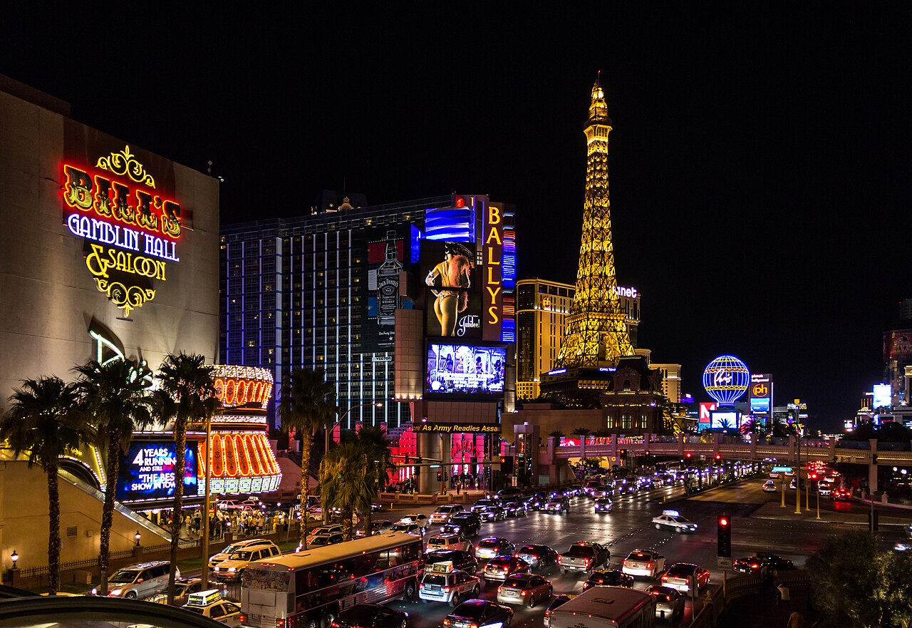
The StripLas Vegas Bulvarı boyunca temalı oteller ve gösteriler.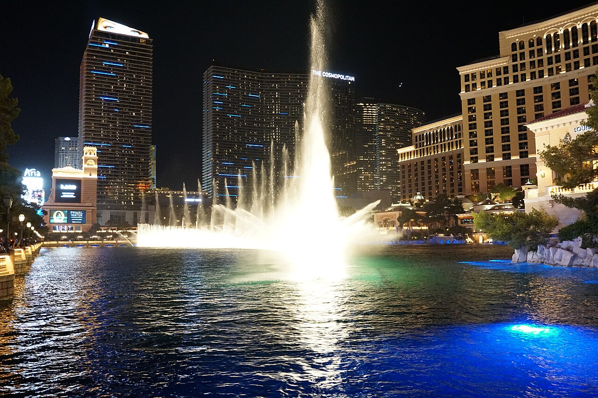
Bellagio ÇeşmeleriAkşamları müzik eşliğinde su gösterisi.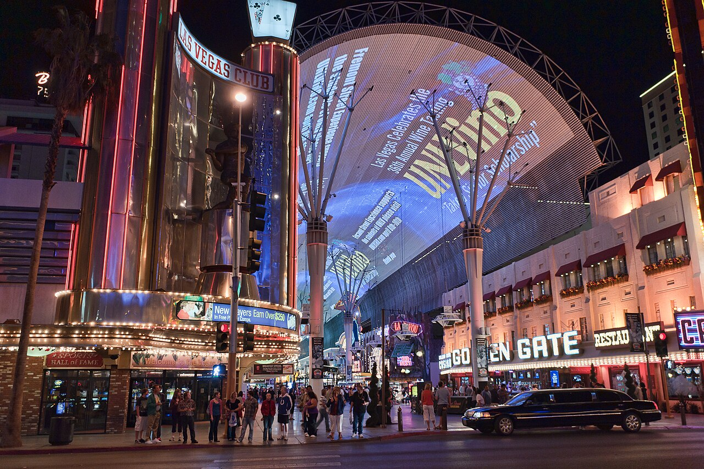
Fremont StreetEski şehir merkezi ve dev ışık tavanı.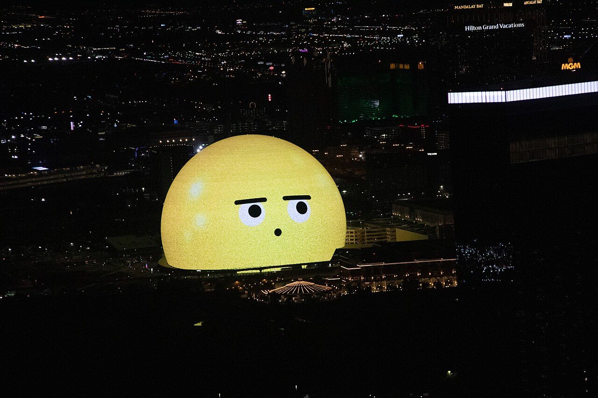
SphereDev LED küre; dışarıdan da izlenir.Fotoğraflar Wikimedia Commons — The Strip: Dietmar Rabich, CC BY-SA 4.0 · Bellagio Çeşmeleri: Matt Kieffer, CC BY-SA 2.0 · Fremont Street: Jean-Christophe BENOIST, CC BY 3.0 · Sphere: Nigel Hoult, CC BY 2.0
Diğer duraklar: The Venetian'ın kanalları ve Grand Canal Shoppes · Caesars Palace Forum Shops · High Roller dönme dolabı · The STRAT gözlem kulesi · Las Vegas North Premium Outlets · günübirlik Hoover Barajı ve Büyük Kanyon turları.
Şehir İçi Ulaşım
Las Vegas Monorail. Strip'in doğusunda SAHARA ile MGM Grand arasında çalışır ve Las Vegas Convention Center'da durur. The STRAT'a en yakın durak SAHARA'dır (yaklaşık 800 m).
Taksi ve Uber/Lyft. Fuar günlerinde sabah ve akşam saatlerinde yoğunluk olur; otellerin belirlenmiş biniş noktaları kullanılır.
Yürüyüş. Oteller haritada yakın görünse de mesafeler uzundur; salonlar arası geçişlere zaman ayırın.
Havalimanı. Tur uçuşları Los Angeles üzerindendir; Las Vegas'a kara yoluyla gidilir (yaklaşık 430 km, 4,5 saat).
Fuar Ziyaretinde Dikkat Edilecekler
Kayıt ve giriş. CES yalnızca sektör profesyonellerine açıktır; kayıt önceden yapılır, yaka kartı fotoğraflı kimlikle teslim alınır.
Alanlar. Las Vegas Convention Center, The Venetian'daki sergi alanları ve girişimlere ayrılan Eureka Park. Günlük rotanızı salonlara göre planlayın.
Kartvizit. Bol miktarda İngilizce kartvizit getirin; görüşme notlarını aynı gün yazın.
Kıyafet. Rahat ayakkabı şart. Salonlar klimalıdır, sabah ve akşam saatleri serindir.
Vize ve pasaport. Umuma mahsus pasaportla ABD'deki bir fuarı ziyaret etmek için göçmen olmayan ziyaretçi vizesi (B1/B2) gerekir; başvuru DS-160 formu ve kural olarak yüz yüze mülakatla yapılır. Vize başvuru desteği için Fuartour'a ulaşabilirsiniz.
Fuartour · Fuar ve iş seyahati organizasyonufuartour.com · 0850 255 58 584 / 6
CES 2027 · 6 gece Las Vegas + Los Angeles
fuartour.com · 0850 255 58 58
ŞEHİR REHBERİ
Los Angeles
Pasifik kıyısındaki Los Angeles, ABD'nin en büyük ikinci şehri ve dünya eğlence endüstrisinin merkezidir. Şehir çok geniş bir alana yayılır; semtler arası ulaşım araçla yapılır. Panoramik şehir turu ve alışveriş turu programa dahildir.
Saat farkı Türkiye'den 11 saat geriPara birimi ABD doları (USD)Ocak havası gündüz ≈ 20 °C, gece ≈ 9 °CElektrik 120 V · A ve B tipi prizBahşiş restoran ve takside %15–20Satış vergisi etiket fiyatına kasada eklenir
Gezilecek Yerler
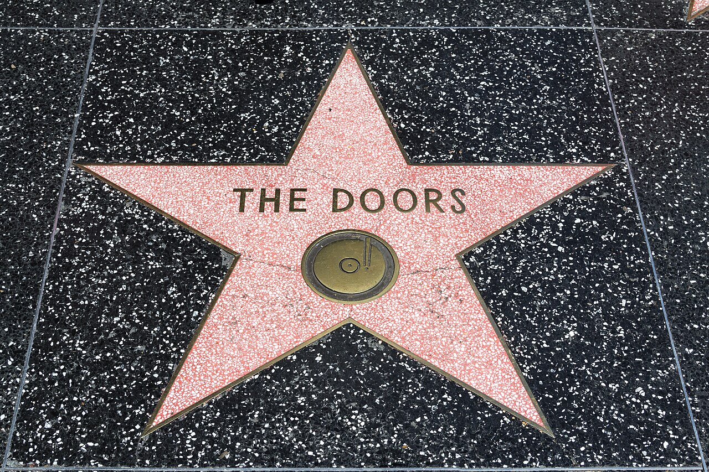
Hollywood BulvarıŞöhretler Kaldırımı ve Çin Tiyatrosu.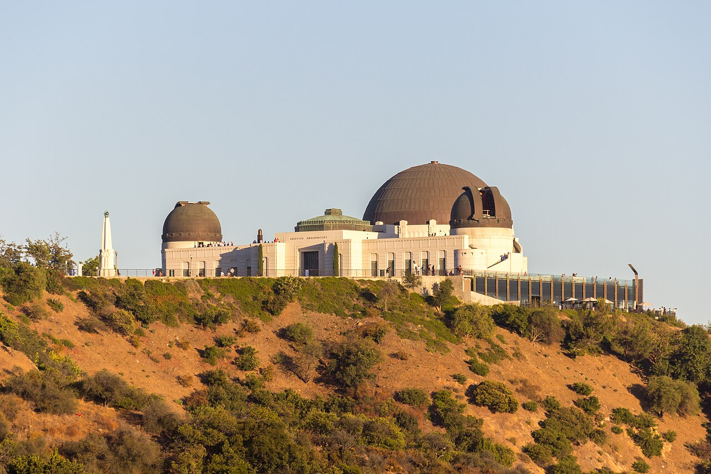
Griffith GözlemeviHollywood yazısı ve şehir manzarası.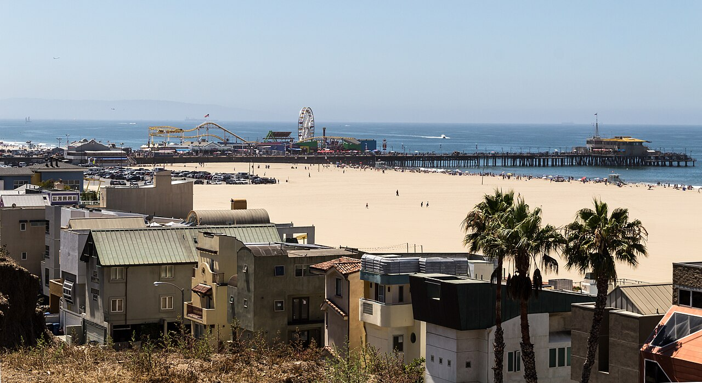
Santa Monicaİskele, lunapark ve okyanus kıyısı.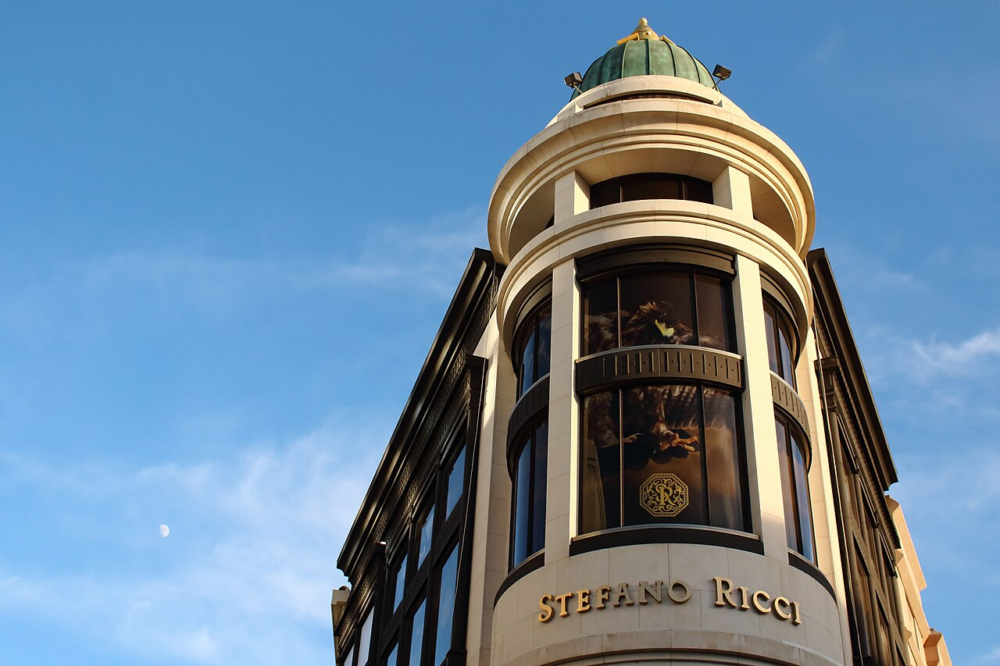
Rodeo DriveBeverly Hills'in lüks alışveriş caddesi.Fotoğraflar Wikimedia Commons — Hollywood Bulvarı: Dietmar Rabich, CC BY-SA 4.0 · Griffith Gözlemevi: Photograph by Mike Peel (www.mikepeel.net)., CC BY-SA 4.0 · Santa Monica: Dietmar Rabich, CC BY-SA 4.0 · Rodeo Drive: CC BY-SA 4.0
Diğer duraklar: Beverly Hills ve Rodeo Drive · Hollywood yazısı manzarası · The Grove ve Farmers Market · Venice Beach · Getty Center · Universal Studios Hollywood · Downtown'da Walt Disney Konser Salonu ve Grand Central Market.
Program Dahilindeki Turlar
Panoramik şehir turu (10 Ocak). Hollywood Bulvarı ve Şöhretler Kaldırımı, Hollywood yazısı manzarası, Beverly Hills ve Rodeo Drive, Santa Monica sahili.
Alışveriş turu (11 Ocak). Odalar boşaltıldıktan sonra outlet alışverişi; ardından havalimanına transfer ve 18:30 THY TK10 ile dönüş.
Pratik Bilgiler
Ulaşım. Uber/Lyft yaygındır. Trafik sabah 07–10 ve akşam 16–19 arasında çok yoğundur; havalimanına erken çıkın.
Alışveriş. Outlet merkezlerinde pasaportla ziyaretçi indirim kuponu alınabilir. Fiyatlara satış vergisi kasada eklenir.
Yemek. Otelin bulunduğu Little Tokyo ve çevresinde çok sayıda restoran vardır; helal ve Akdeniz mutfağı seçenekleri şehir genelinde bulunur.
İletişim. ABD'de kullanım için e-SIM ya da uluslararası paket önerilir; otellerde ücretsiz Wi-Fi vardır.
Fuartour · Fuar ve iş seyahati organizasyonufuartour.com · 0850 255 58 585 / 6
CES 2027 · 6 gece Las Vegas + Los Angeles
fuartour.com · 0850 255 58 58
TUR KAYIT FORMU VE SÖZLEŞMESİ
CES 2027 Las Vegas + Los Angeles Turu – Katılım Formu
6 Gece · 5 – 12 Ocak 2027 · çift kişilik odada kişi başı 2.870 USD · tek kişilik odada 3.850 USD
| FİRMA ADI / ÜNVANI | |
| FATURA ADRESİ | |
| İL / İLÇE | |
| VERGİ DAİRESİ / NUMARASI | |
| TELEFON | |
| E-MAIL / WEB ADRESİ | |
ÖDEME BİLGİLERİ
Tur kaydı esnasında ödemenin %100'ü yapılmalıdır.
Kuveyt Türk Bankası – USD
TR30 0020 5000 0984 8446 3001 01
Kuveyt Türk Bankası – TL
TR86 0006 2000 0780 0006 2984 48
Hesap adı: FUAR TURİZM DIŞ TİC. LTD. ŞTİ.
Lütfen havalelerinizi katılımcı firma adına yapınız.
Katılımcılar
| ADI SOYADI (pasaporta göre yazınız) | CEP TELEFONU | 2 KİŞİLİK ODA | 1 KİŞİLİK ODA | TUTAR (USD) |
|---|
| 1-) | | | ☐ | ☐ | |
| 2-) | | | ☐ | ☐ | |
| 3-) | | | ☐ | ☐ | |
| 4-) | | | ☐ | ☐ | |
| ☐ Nakit / Havale ☐ Kredi kartı (tek çekim) · Kart türü: ............... | TOPLAM (USD) | |
Sözleşme Şartları
Genel Şartlar: 1- Katılımcı müracaatı ile şartları okuyup kabul ettiğini beyan etmektedir. 2- Havayolu şirketi / şirketlerine bağlı aksaklıklardan dolayı firmamız sorumlu değildir. 3- Varılacak / geçilecek noktalar için ilgili ülke veya yönetimlerin vize veya geçiş izni vermesi konusunda Fuar Tour herhangi bir taahhüt altına girmez. Vize reddi – geçiş izni verilmemesi gibi bahsedilen durumlar oluşursa, Fuar Tour iptal işlemleri için geçerli hükümleri uygular. 4- Hareket saatine 25 günden az kala olan iptallerde katılımcı tur bedelinin tamamını ödemek durumundadır. Tüm iptal talepleri yazılı olarak yapılmak zorundadır. 5- Tur bedellerinin bir kısmının dahi ödenmemesi durumunda Fuar Tour tur kaydı iptal hakkı mahfuzdur. 6- Tek kişilik başvurularda kişi Fuar Tour'un vereceği paylaşımlı odayı peşinen kabul etmiştir veya tek kişilik oda farkını ödeme durumundadır. 7- Katılımcı tur programına uymak zorundadır. Değişiklik talepleri teknik şartlar dahilinde değerlendirilecektir. 8- Ödemelerde TCMB USD satış kuru esastır. 9- Zorunlu durumlarda Fuar Tour, kendi iradesi dışında oluşan sebepler yüzünden, program süresi ve standartlarını değiştirmeden, otel, hareket saatleri – transfer araçları ve şehirleri önceden haber imkânı bulamasa dahi değiştirme hakkına sahiptir.
Katılımcı Onayı
Formda verdiğimiz tüm bilgi ve şartları teyit ederiz.
Yetkili isim: ........................................
Tarih: ...... / ...... / 20....
Kaşe / İmza
FUAR TURİZM DIŞ TİCARET LTD. ŞTİ.
TÜRSAB A-5672 FUARİST TRAVEL
Kurtuluş Cad. No:1 Köşe Apt. Kat:3 Daire:5 Şişli / İstanbul
Tel: +90 212 230 91 93 · Faks: +90 212 230 91 95
0850 255 58 58 · www.fuartour.com
Fuartour · Fuar ve iş seyahati organizasyonufuartour.com · 0850 255 58 586 / 6